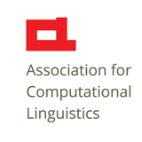
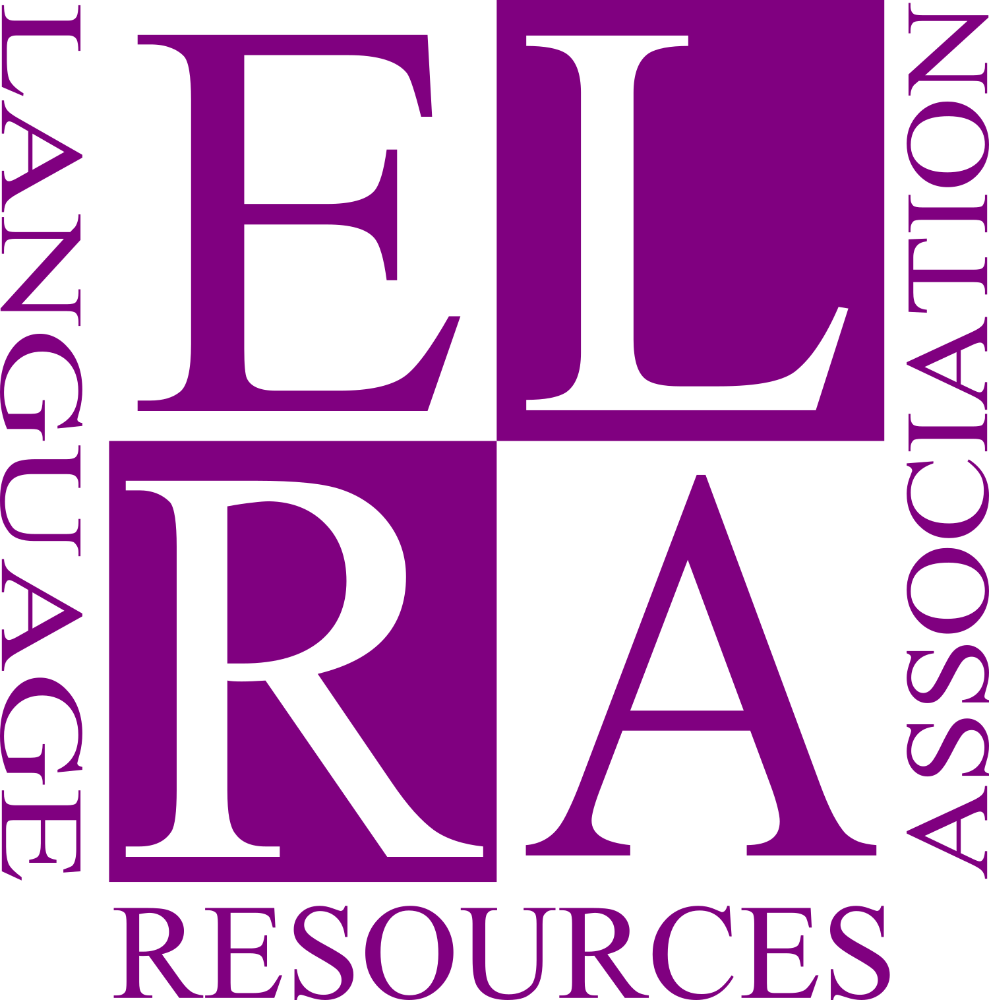

ACL and ELRA
Special Interest Group for Annotation


The 21st Linguistic Annotation Workshop (LAW XXI) will take place in Kyoto, Japan in August 2027, co-located with the ACL 2027 conference. The special theme for the workshop is Generative AI and Annotation.